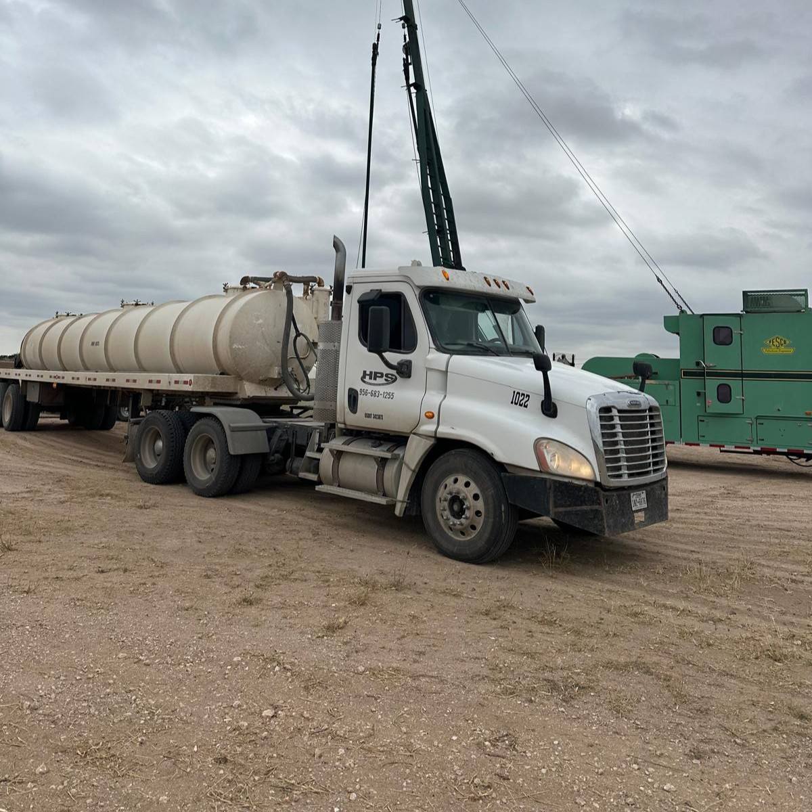
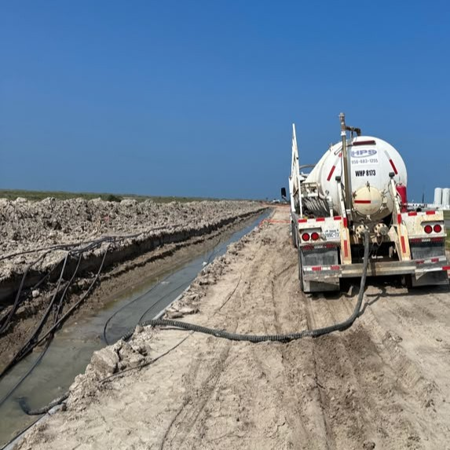
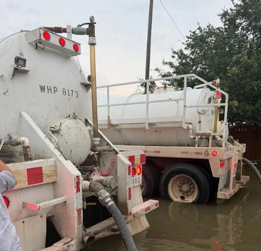
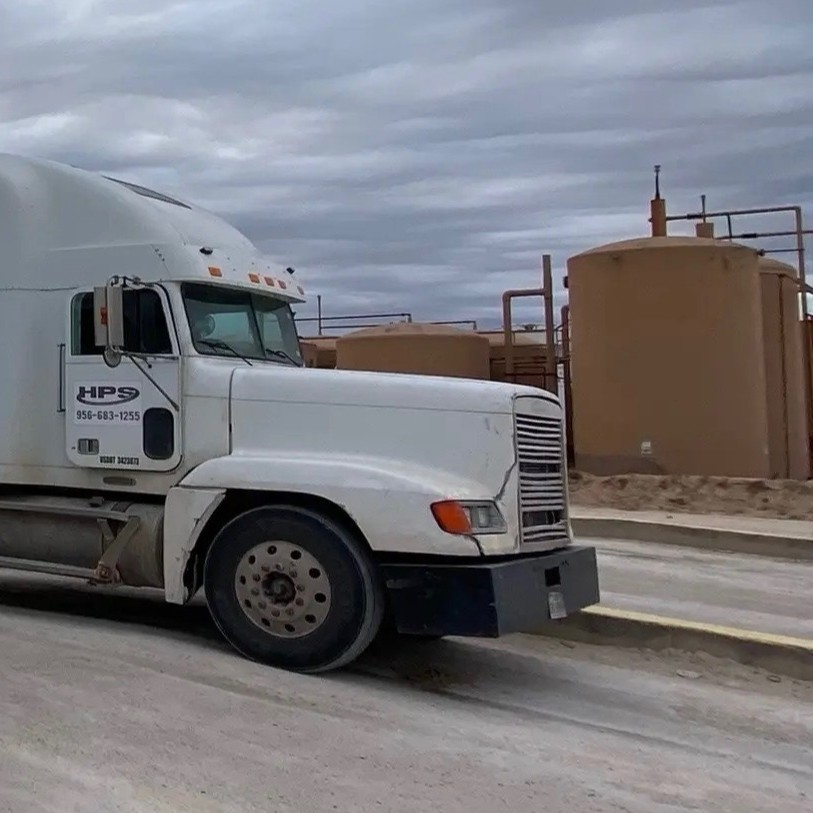
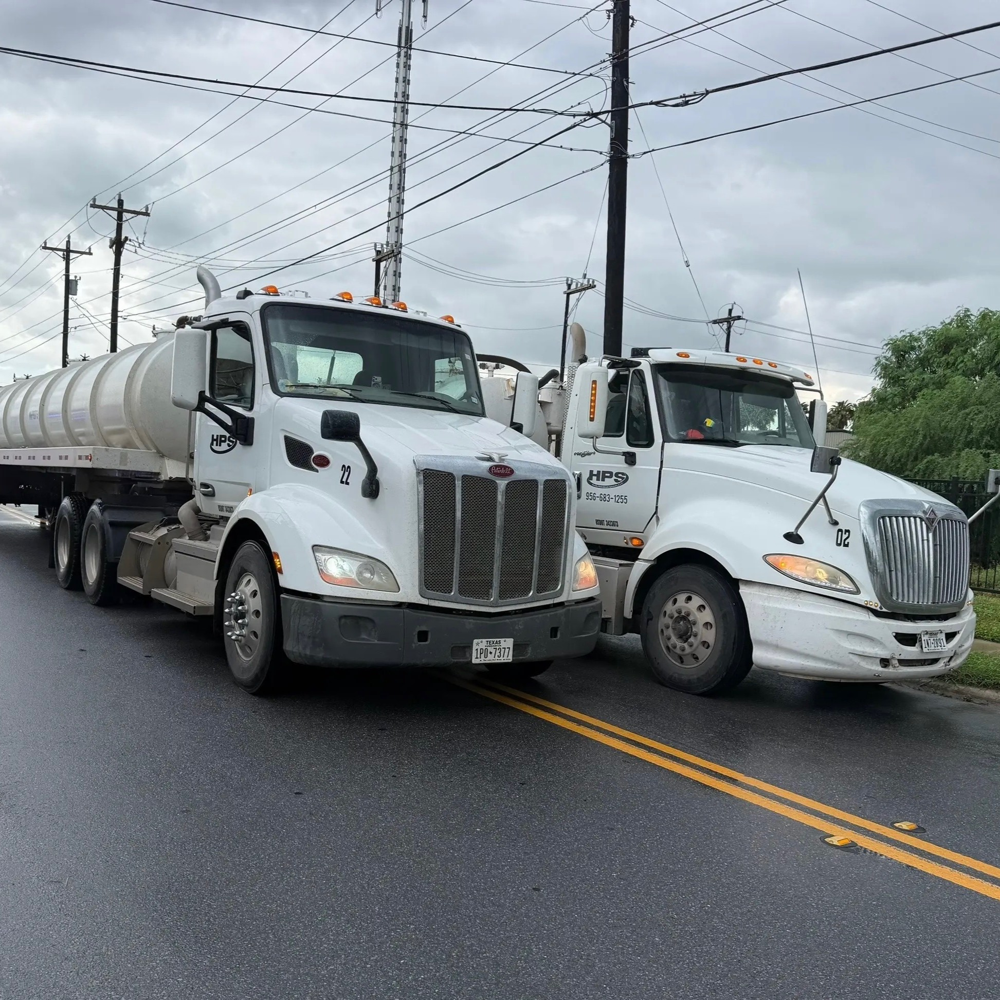

Vacuum Truck Services for the Oil & Gas Industry
Fast, reliable vacuum truck service across the Rio Grande Valley.
Overview
Husky Petroleum Services provides vacuum truck services to operators, drilling contractors, and midstream companies throughout the Rio Grande Valley. Our fleet is ready to respond quickly to flowback, produced water, tank bottoms, and spill events with full documentation to keep your operation compliant.
What We Handle

Flowback & Produced Water Hauling
Reliable hauling services for oilfield operations.

Tank Bottoms & Sludge Removal
Safe removal and disposal of oilfield waste materials.

Spill Response
Fast response for cleanup and emergency situations.

Tank Cleaning
Professional cleaning services for storage tanks.

Routine and Emergency Dispatch
Dependable vacuum truck support for scheduled work and emergency oilfield operations
Why Operators Choose Husky Petroleum Services
24/7 Availability - Emergency response when it matters most
Fleet Capacity - Multiple trucks ready to deploy, so you're never waiting
Compliance Documentation - Manifest tracking and disposal records handled correctly on every load
Local, Hands-On Team - Based in Mission, TX, with direct knowledge of the Valley's oil and gas operations
Insured & Ready - Full insurance coverage and safety compliance on every job